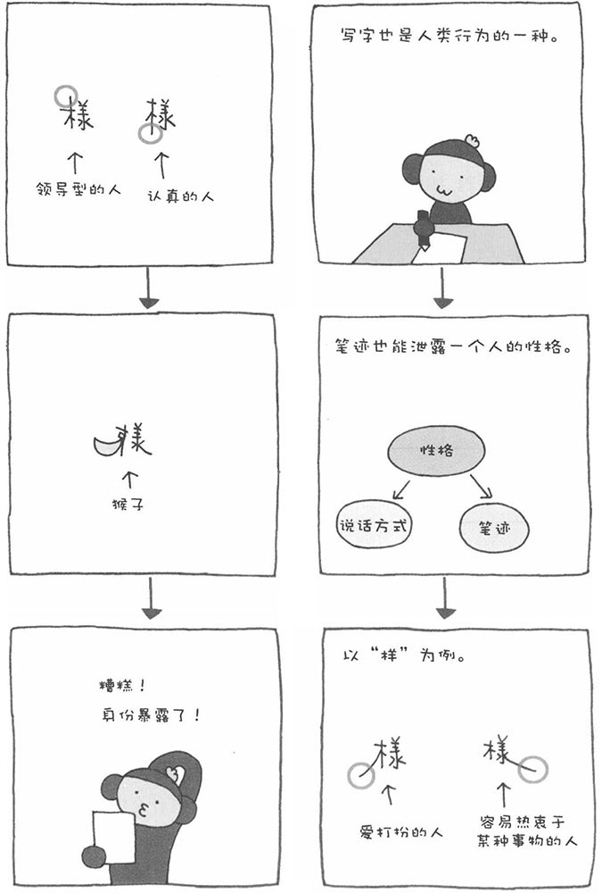
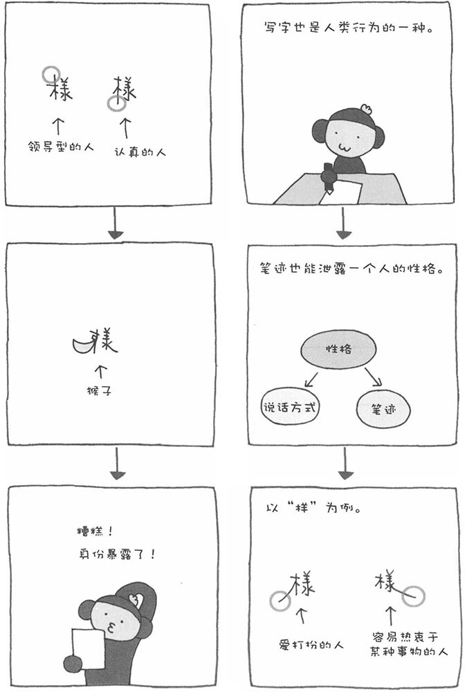

根据笔迹分析自己的性格
～通过笔迹看人的深层心理～
写字也和说话一样，是人的行为之一。笔迹中也能流露出一个人的性格。我们不妨来研究一下笔迹，发现自己平时没有发现的性格。
接下来，以简单的汉字"口"为例进行说明。不过，请朋友们牢记前面讲的"巴纳姆效应"，不要把目光只放在"分析得准与不准"上，而应该把这种方法当作是发现自我的一种工具。


写字也和说话一样，是人的行为之一。笔迹中也能流露出一个人的性格。我们不妨来研究一下笔迹，发现自己平时没有发现的性格。
接下来，以简单的汉字"口"为例进行说明。不过，请朋友们牢记前面讲的"巴纳姆效应"，不要把目光只放在"分析得准与不准"上，而应该把这种方法当作是发现自我的一种工具。
